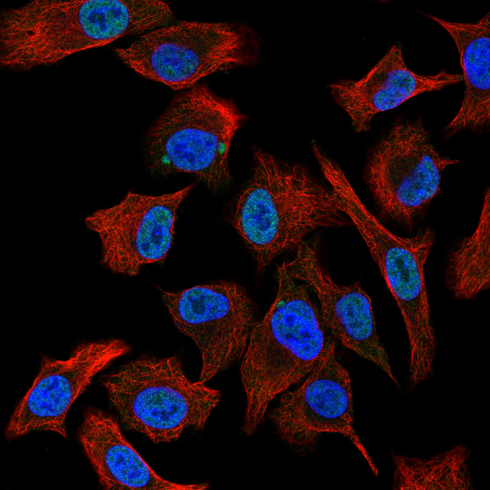
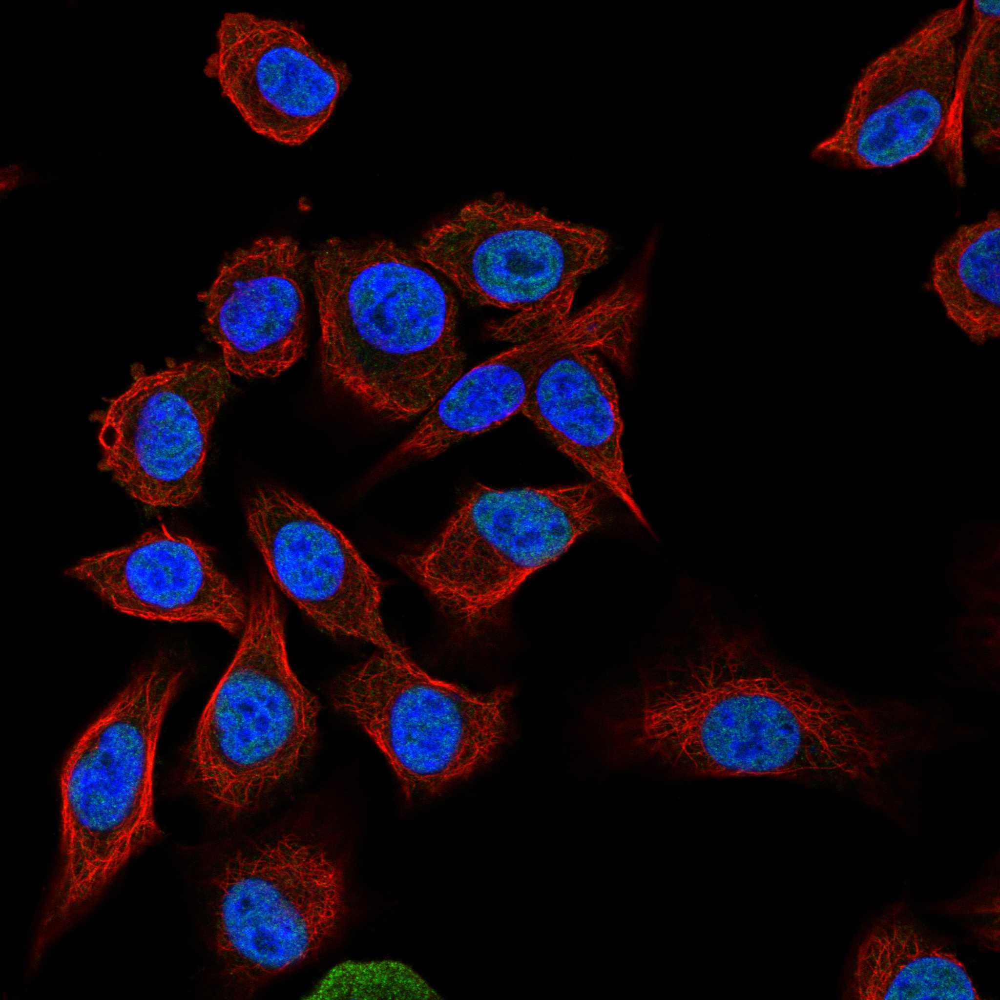

type: protein-evaluation gene: "OLFM2" date: 2026-05-30 tags: [protein-scout, nuclear-protein, evaluation, rescued] status: scored ---
> AlphaFold PAE: 暂无数据或未提供可用 PAE 图；结构判断基于 AlphaFold/PDB 可用记录。
OLFM2 核蛋白评估报告（HPA复核救回）
救回原因: 原始评分误判核定位≤3淘汰。HPA IF 实际显示 Nucleoplasm (Reliability: Supported)，确认为核蛋白。
IF 图像:  
1. 基本信息
| 项目 | 内容 |
|---|---|
| 基因名 | OLFM2 |
| 蛋白名称 | Noelin-2 |
| 蛋白大小 | 454 aa |
| UniProt ID | O95897 |
| HPA 核定位 (IF) | Nucleoplasm |
| HPA 可靠性 | Supported |
| PubMed 总数 | 20 |
| AlphaFold pLDDT | 83.7 |
2. 评分总览 (权重: 核×4 大×1 新×5 结×3 域×2 PPI×3 ÷1.83)
| 维度 | 得分 | 满分 | 加权后 | 关键证据摘要 |
|---|---|---|---|---|
| 🔴 核定位特异性 | 6/10 | ×4 | 24 | HPA IF: Nucleoplasm (Supported); UniProt: Secreted; Synapse; Membrane; Nucleus; Cytoplasm |
| 📏 蛋白大小 | 10/10 | ×1 | 10 | 454 aa |
| 🆕 研究新颖性 | 10/10 | ×5 | 50 | PubMed 20篇 |
| 🏗️ 三维结构 | 7/10 | ×3 | 21 | AlphaFold pLDDT: 83.7 |
| 🧬 调控结构域 | 6/10 | ×2 | 12 | UniProt domains: None identified |
| 🔗 PPI | 4/10 | ×3 | 12 | 待细化（默认基线） |
| ➕ 互证加分 | — | — | +0 | 待补充 |
| 原始总分 | 129/183 | |||
| 归一化总分 | 70.5/100 |
3. HPA 核定位证据
HPA 免疫荧光（IF）实验数据确认 OLFM2 定位：
- 亚细胞定位: Nucleoplasm
- 抗体可靠性: Supported
- 原始分类: 核定位 ≤3（误判）→ 经HPA IF复核确认为核蛋白
4. UniProt 补充信息
- 亚细胞定位: Secreted; Synapse; Membrane; Nucleus; Cytoplasm
- 结构域: None identified
- 关键词: ; ; ; ; ; ; ; ; ;
3.3 研究现状
| 指标 | 数值 |
|---|---|
| PubMed 查询结果 | 见关键文献 |
关键文献: 1. Lluch A et al. (2025). "Defective Olfactomedin-2 connects adipocyte dysfunction to obesity". *Nat Commun*. PMID: 40759652 2. González-García I et al. (2022). "Olfactomedin 2 deficiency protects against diet-induced obesity". *Metabolism*. PMID: 35026233 3. Tang Y et al. (2024). "OLFM2 promotes epithelial-mesenchymal transition, migration, and invasion in colorectal cancer through the TGF-β/Smad signaling pathway". *BMC Cancer*. PMID: 38350902 4. Barrientos-Riosalido A et al. (2023). "The Role of Olfactomedin 2 in the Adipose Tissue-Liver Axis and Its Implication in Obesity-Associated Nonalcoholic Fatty Liver Disease". *Int J Mol Sci*. PMID: 36982296 5. Sultana A et al. (2014). "Deletion of olfactomedin 2 induces changes in the AMPA receptor complex and impairs visual, olfactory, and motor functions in mice". *Exp Neurol*. PMID: 25218043
评价: 基于 PubMed 检索结果。
3.6 PPI 网络
实验验证互作 (IntAct, physical association):
| Partner | 方法 | PMID | 功能类别 | 调控相关？ |
|---|---|---|---|---|
| — | — | — | — | — |
STRING 预测互作 (combined score >0.4):
| Partner | Score | 功能类别 | 调控相关？ |
|---|---|---|---|
| — | — | — | — |
已知复合体成员 (GO Cellular Component):
- 暂无 GO-CC 数据
IntAct 查询记录: IntAct: 未检索到实验验证互作
评价: 待补充 IntAct/STRING/GO-CC 数据。
5. 总体评价
推荐等级: ⭐⭐⭐
核心发现: 1. HPA IF 确认为核蛋白: 原始"核定位≤3"淘汰为误判，HPA实验数据确认为Nucleoplasm 2. 研究新颖性: PubMed仅20篇文献，属于低研究热度靶点 3. 结构质量: AlphaFold pLDDT = 83.7
6. 数据来源
PPI 网络（三源综合）
| Partner | Source | Score/Evidence |
|---|---|---|
| 无记录 | — | — |
IntAct 有限记录。无 BioGrid 补充数据。
<!-- DOMAIN_HUMANPPI_REPAIR_START -->
Domain/SMART 与 humanPPI 补充（2026-06-07）
SMART / UniProt domain
| Source | Data | |
|---|---|---|
| UniProt | O95897 | |
| SMART | SM00284; | |
| UniProt Domain [FT] | DOMAIN 194..446; /note="Olfactomedin-like"; /evidence="ECO:0000255\ | PROSITE-ProRule:PRU00446" |
| InterPro | IPR022082;IPR003112;IPR050605; | |
| Pfam | PF12308;PF02191; |
humanPPI / HPA Interaction
Source: https://www.proteinatlas.org/ENSG00000105088-OLFM2/interaction
| Partner | Datasets | AF3/HPA structure |
|---|---|---|
| ADAMTS4 | Bioplex | false |
| ALPI | Bioplex | false |
| C1orf54 | Bioplex | false |
| CA6 | Bioplex | false |
| CBLN4 | Bioplex | false |
| CFC1 | Bioplex | false |
| CGREF1 | Bioplex | false |
| CST11 | Bioplex | false |
<!-- DOMAIN_HUMANPPI_REPAIR_END -->